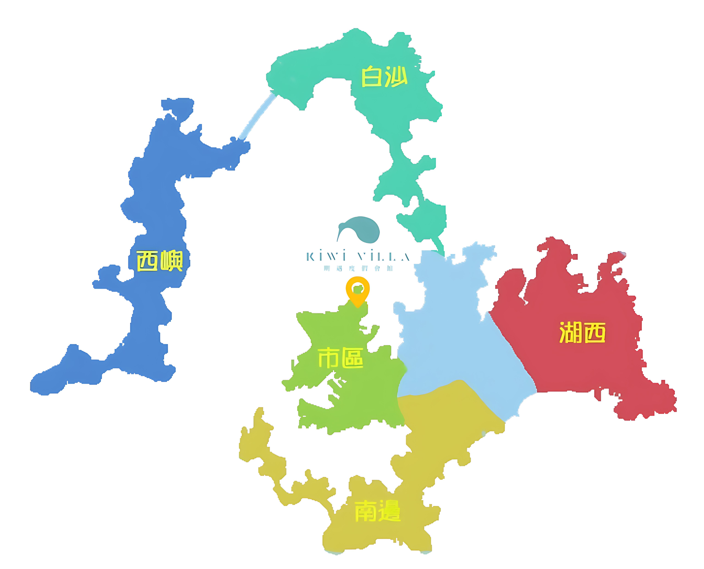

如何挑選澎湖住宿位置？
澎湖群島位於台灣島與中國大陸之間的臺灣海峽上，由90座大小不等之島嶼組成。澎湖人常說的本島是由馬公市、湖西、白沙、西嶼組成。
澎湖的市區主要指在馬公市中正路（麥當勞）附近，但是馬公市除了以下地圖標識的市區部分，南邊的區域也都在馬公市範圍內！如果希望住的地方離市區不要太遠，建議Google地圖搜尋一下住宿地址到澎湖麥當勞的距離是否能接受。
澎湖雖然四面環海但是澎湖的沙灘主要集中在澎湖的南邊，因此若是需要離沙灘近的住宿地點可挑選山水地區的民宿。
西嶼、白沙、湖西這三個地方離市區較遠民宿不多，但是大部分都有海景，可以根據個人需求考慮！

期遇絕佳的地理位置
交通便捷
從澎湖機場駕車前往民宿8.5公里，約12分鐘到達；從碼頭駕車前往民宿約3.5公里，約9分鐘到達。
機場：8.5km / 12分鐘
碼頭：3.5km / 9分鐘
核心商圈
馬公市西衛里距離澎湖最熱鬧的市區商圈約9分鐘車程，距離澎湖唯一的大學澎湖科技大學以及大學生常去的三多商圈僅2公里路程，距離最近的7-11僅800公尺！
市區商圈：9分鐘車程
澎科大：2公里
7-11：800公尺
外送覆蓋範圍
期遇處於澎湖外送平台規定的外送範圍內，即使不出門也可點外送！
UberEat 配送範圍
Foodpanda 配送範圍
交通指南
從澎湖機場
1
開車沿201縣道往馬公市區方向
2
約12分鐘即可抵達期遇度假會館
距離
8.5公里
車程
約12分鐘
從馬公港碼頭
1
出碼頭後往市區方向
2
沿中正路往西衛方向
3
約9分鐘即可抵達會館
距離
3.5公里
車程
約9分鐘